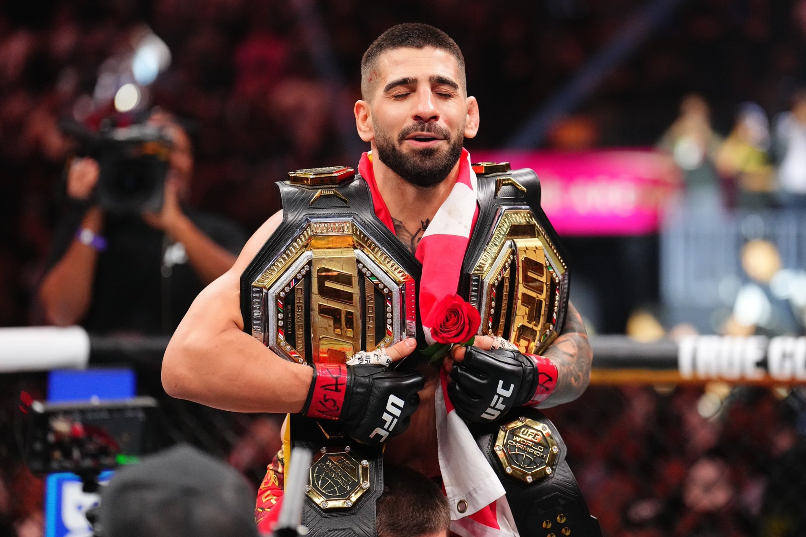

|
 |
|
| Nombre completo | Ilia Topuria |
| Nacimiento | 21 de enero de 1997 Halle, Alemania |
| Apodo | El Matador |
| Nacionalidad | Hispano‑georgiano |
| Altura | 1,70 m |
| Peso | Peso ligero (155 lb) |
| Organización | Ultimate Fighting Championship (UFC) |
| Título | Campeón Mundial de Peso Ligero de la UFC |
Ilia Topuria (Halle, Alemania; 21 de enero de 1997) es un artista marcial mixto hispano‑georgiano que compite en la división de peso ligero de la Ultimate Fighting Championship (UFC). Es el actual Campeón Mundial de Peso Ligero de la UFC, habiendo ganado el título tras un nocaut impresionante contra Charles Oliveira en UFC 317 el 28 de junio de 2025.
Topuria nació en Alemania y tiene raíces georgianas por parte de su familia. Creció entrenando artes marciales desde muy joven y, aunque compitió inicialmente en categorías inferiores, pronto destacó en organizaciones europeas antes de firmar con la UFC en 2020.
Ilia Topuria debutó en la UFC el 10 de octubre de 2020 y rápidamente se estableció como uno de los principales contendientes en la división de peso pluma. Obtuvo victorias notables por nocaut contra peleadores como Alexander Volkanovski y Max Holloway.
En 2025, tras dejar vacante el título de peso pluma, Topuria subió al peso ligero para disputar el título mundial vacante. En UFC 317, se enfrentó a Charles Oliveira y lo derrotó por nocaut técnico en el primer asalto para convertirse en Campeón Mundial de Peso Ligero.
Topuria es conocido por su estilo agresivo y versátil, combinando un fuerte boxeo con habilidades de jiu‑jitsu brasileño y grappling. Su presión constante y combinaciones precisas lo han convertido en uno de los peleadores más completos de su división.
Topuria ha mantenido un récord profesional impresionante, con victorias por nocaut, sumisión y decisión, consolidándose como uno de los campeones más dominantes de su generación.